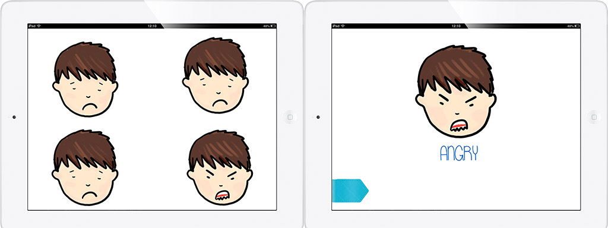
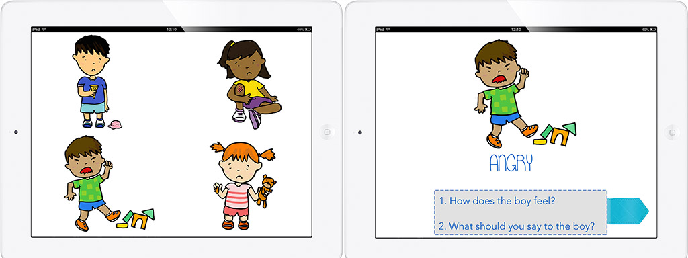
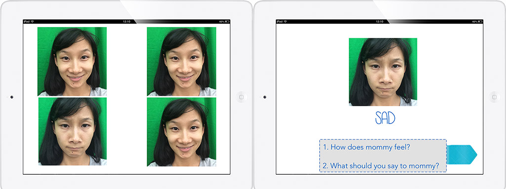
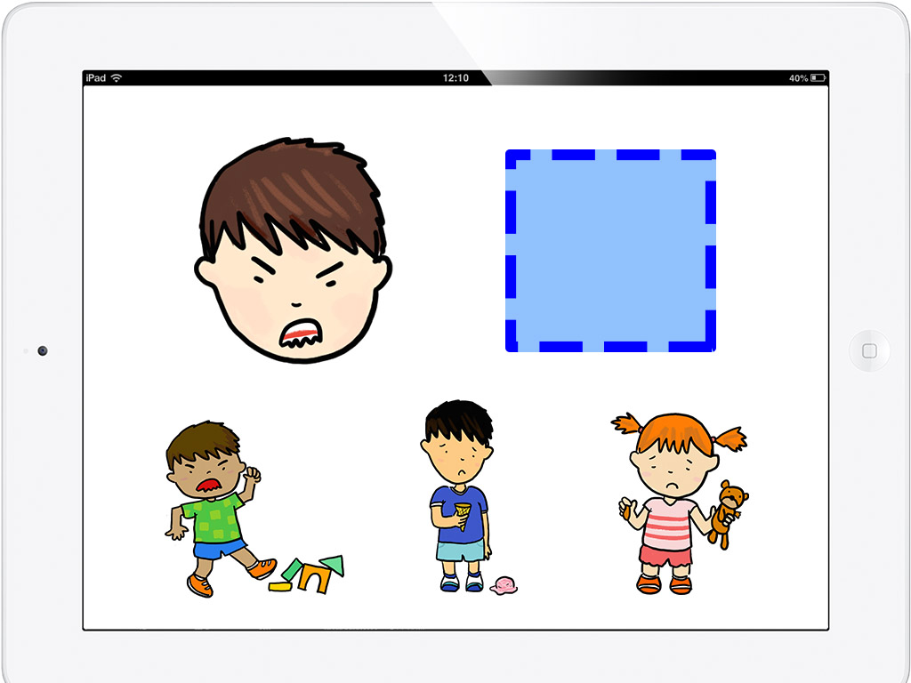

FeelingTalk: Let's Talk about Feelings
Many children with autism spectrum disorder (ASD) struggle with reading and understanding facial expressions and the underlying emotions, making it very difficult for them to initiate and hold meaningful interactions with other people.
FeelingTalk incorporates learning theories and game features that leverage the unique strengths of autistic children to help them learn to identify and understand emotions. FeelingTalk also provides parents a platform to play and work with their child to build social emotional skills together.
Learn mode Level I: Spot the Different Cartoon Face
Learn mode Level II: Spot the Different Feeling
Learn mode Level III: Spot the Different Face Uploaded by Parents
Play mode: Match the Feelings
 ← Back to Design Work